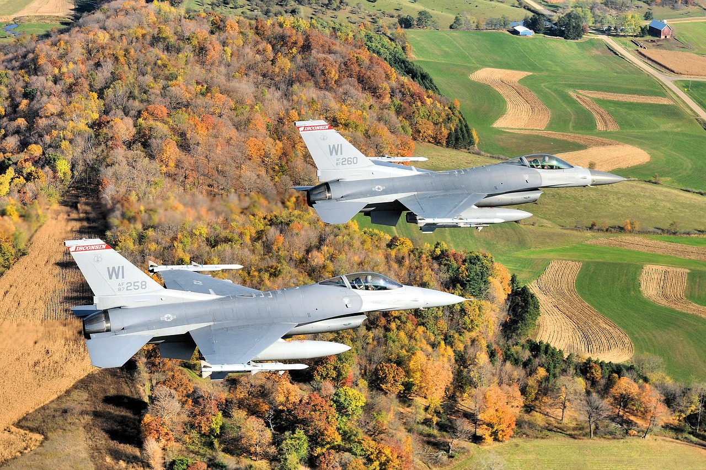
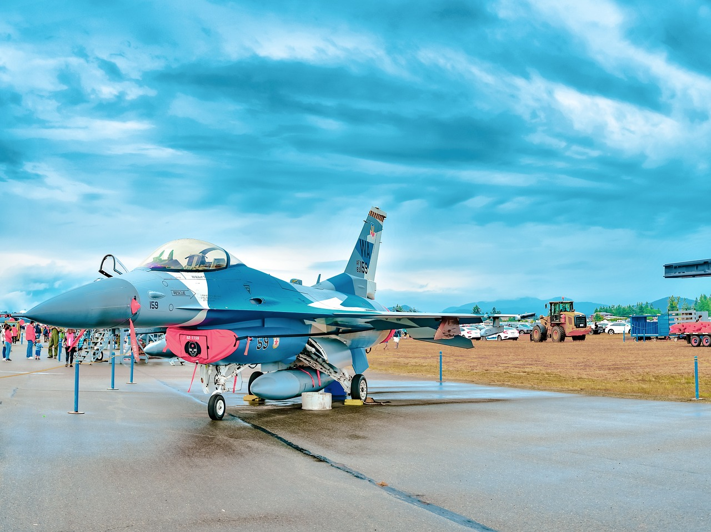
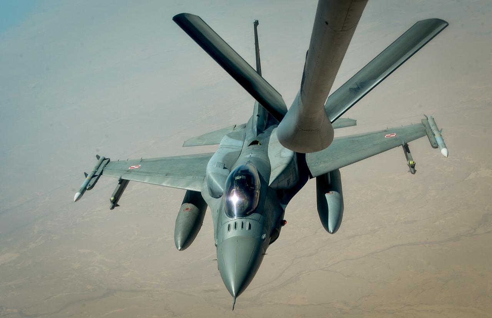

Historia Powstania

F-16 jest myśliwcem 4. generacji, zaprojektowanym i wprowadzonym do produkcji seryjnej w latach 70. XX wieku w znacznej mierze w wyniku doświadczeń zdobytych w latach 60. Najnowsze wersje samolotu spełniają wymagania myśliwców generacji 4,5. F-16 powstał w rezultacie badań rozpoczętych w ramach programu Lightweight Flighter Program, zapoczątkowanego przez Siły Powietrzne Stanów Zjednoczonych w 1960 roku. W czasie projektowania szczególnie duże znaczenie miała analiza doświadczeń zdobytych w czasie konfliktów zbrojnych, w których uczestniczyły Stany Zjednoczone, w szczególności z wojny w Wietnamie.
Pierwotnie miał on być dziennym myśliwcem lekkim, uzupełnieniem cięższego F-15 Eagle’a. Wpływ na kształt projektu miała także tzw. doktryna elastycznego reagowania zakładająca dostosowanie środków walki do zagrożenia, w pierwszej kolejności użycie broni konwencjonalnej, a w następstwie dopiero broni jądrowej. Obydwa etapy wymagały użytkowania szybkich, niewielkich samolotów zdolnych do przenoszenia różnych rodzajów broni. Dlatego też od początku planowane było dostosowanie F-16 do ataków na cele naziemne.
Pomimo upływu ponad czterdziestu lat od jego oblotu, dzięki systematycznemu rozwojowi i zwiększaniu możliwości bojowych, samolot ten wciąż zachowuje wysokie walory bojowe i będzie stanowił wyposażenie amerykańskich sił powietrznych co najmniej do 2030 roku, a w innych państwach nawet dłużej. Siły powietrzne Stanów Zjednoczonych nie były zainteresowane kolejnymi wersjami F-16 ze względu na plany wprowadzenia do eksploatacji myśliwców piątej generacji, w szczególności samolotu o obniżonej wykrywalności F-35. Nie zmienia to faktu, że projekt jest nadal rozwijany przez Lockheed Martin, który proponuje nowe wersje samolotu odbiorcom eksportowym.
Źródło:Wikipedia
Konstrukcja
Konstrukcja samolotu, jako pierwsza powstała z założeniem jego niestabilności, w którym pozycja samolotu utrzymywana jest dzięki sterowanemu komputerowo systemowi fly-by-wire, dzięki czemu samolot z dużą łatwością wykonuje manewry z przeciążeniem 9g. Wymaganie niestabilności zostało postawione dzięki opracowaniu grupy byłych pilotów myśliwskich uczestniczących wojnie w Korei – w tym płk. Johna Boyda – pod tytułem Energy Maneuverability Theory, w którym wprowadzono nowe idee uzyskania dużej manewrowości w następujących po sobie manewrach. Praktyczne zastosowanie nowej teorii w konstrukcji nowego samolotu, doprowadziło do uzyskania w F-16 rewolucyjnej wówczas manewrowości nowej konstrukcji[5].
Pierwszy oblot prototypu myśliwca, o oznaczeniu YF-16 odbył się 2 lutego 1974 roku. Po modyfikacjach w konstrukcji i wyposażeniu został on wprowadzony do produkcji w wersjach jedno i dwumiejscowej w roku 1976. Pierwszy egzemplarz trafił na uzbrojenie Sił Powietrznych USA w styczniu 1979 roku. Projekt był jednak dalej modyfikowany w celu optymalizacji osiągów i wyposażenia, tak aby samolot był możliwie najbardziej wielozadaniowy. W latach 80. wprowadzono do produkcji seryjnej nowe wersje C i D, które do początku lat 90. zastąpiły wszystkie używane w USA F-16A i B. W 1993 roku produkcja seryjna została przeniesiona do Lockheed Corporation, której sprzedano dział produkcji lotniczej General Dynamics. W roku 1995 Lockheed połączył się z Martinem Mariettą, tworząc koncern Lockheed Martin, który jest producentem wszystkich egzemplarzy dostarczonych Polsce.
Źródło:Wikipedia
W boju

Pierwszy raz w walce zostały użyte przez Izrael 7 czerwca 1981 podczas ataku na reaktor atomowy Osirak w Iraku.
Pierwszym obcym samolotem zestrzelonym przez F-16 był w 1981 syryjski myśliwiec MiG-21 produkcji radzieckiej. Ogółem w roku 1981 izraelskie F-16 pokonały przynajmniej sześć MiG-ów-21. Kolejne zastosowanie bojowe F-16 znalazły w roku 1982 w bitwie nad doliną Bekaa w czasie wojny libańskiej. Stany Zjednoczone i Izrael podały informację o zniszczeniu 44 samolotów syryjskich.
W styczniu 1991 doszło do najliczniejszego dotychczas użycia F-16 w liczbie 249 maszyn w czasie operacji „Pustynna Burza”. F-16 wykonały wtedy 13 500 lotów, w tym 4000 w nocy. Głównym zastosowaniem F-16 były misje szturmowe i bombardowania, jednak zestrzeliły także dwa samoloty irackie typu MiG-29 i MiG-25, utracono dziewięć samolotów, z których pięć zostało zestrzelonych, natomiast cztery rozbiły się z innych przyczyn.
W latach 1986–1988 samoloty te użyte były przez Pakistan w czasie wojny domowej w Afganistanie i zestrzeliły wtedy cztery Su-22, jednego An-26, dwa MiG-23 i jednego Su-25, które naruszyły przestrzeń powietrzną Pakistanu.
Źródło:Wikipedia
We Wojsku Polskim

18 kwietnia 2003 r. rządy Polski i Stanów Zjednoczonych podpisały kontrakt na dostawę 36 jednomiejscowych samolotów bojowych F-16C i 12 dwumiejscowych samolotów szkolno-bojowych F-16D w latach 2006-2008. Samoloty te zostały wyprodukowane przez zakład Lockheed Martin Aeronautics Company w Fort Worth w Teksasie. Pierwszy polski F-16C (z numerem bocznym 4040) został oblatany w Fort Worth 14 marca 2006 r. przez Paula Hattendorfa, pilota fabrycznego Lockheed Martin. Pierwszy F-16D (z numerem 4076) został oblatany w końcu maja. Polskie F-16C noszą numery boczne od 4040 do 4075 malowane na statecznikach pionowych. (numery fabryczne JC-1 do JC-36, FY USAF 03-0040 do 03-0075), a F-16D noszą numery od 4076 do 4087 (numery fabryczne JD-1 do JD-12, FY USAF 03-0076 do 03-0087). Samoloty pomalowano w dwukolorowy kamuflaż, składający się z szarych (FS36270) plam na jasnoszarym (FS36375) powierzchniach górnych, dolne powierzchnie są jednolicie jasnoszare (FS36375). Szachownice w kolorze biało-czerwonym malowane są na stateczniku pionowym oraz na dolnych powierzchniach obu skrzydeł[1].
Polskie F-16 Jastrząb mają resurs 8000 godzin, co umożliwia ich czterdziestoletnią eksploatację ze średnim rocznym nalotem na maszynę w wysokości 200 godzin. Samoloty szkolne dysponują takimi samymi możliwościami, jak maszyny bojowe, z wyjątkiem nieznacznie zmniejszonego taktycznego promienia działania (mniejszy zapas paliwa wewnętrznego). Pierwsze cztery polskie F-16 Jastrząb zostały przekazane Polsce 11 listopada 2006 r. w czasie uroczystości z udziałem Prezydenta RP Lecha Kaczyńskiego. Ostatnie trzy dostarczono 12 grudnia 2008 r[1].
Podstawowym zadaniem polskich F-16 Jastrząb jest obrona powietrzna. Do tego rodzaju zadania zostały one wyposażone we wszelkie dostępne środki bojowe i wyposażenie. Zakupiono dwa najnowsze typy kierowanych pocisków rakietowych do zwalczania celów powietrznych – 178 średniego zasięgu Raytheon AIM-120C-5 AMRAAM oraz 178 małego zasięgu Rayetheon AIM-9X Sidewinder. Dodatkowo polskie F-16 Jastrząb zostały wyposażone w najnowszą dostępnie stacje radiolokacyjną Northrop Grumman (Westinghouse) AN/APG-68(V)9 oraz system wymiany informacji taktycznej IDM (Iproved Data Modem), pracujący w standardzie Link 16, umożliwiający tworzenie wspólnego zobrazowania sytuacji taktyczno-bojowej w grupie samolotów, a w przyszłości wymianę danych także z innymi, naziemnymi i powietrznymi źródłami informacji taktycznej[1].
Źródło:Wikipedia